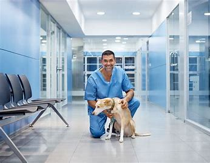

- Ética profesional
- Respeto por el paciente
- Trabajo en equipo
- Comunicación
- Actualización profesional
- Honestidad
- Responsabilidad
| Misión |
Visión | Valores  |
|---|---|---|
| Ofrecer una atención veterinaria adecuada a los animales y sus familias en el barrio Miguel Lanús y alrededores; además de asumir responsabilidad en el cuidado y sanidad animal. | Continuar apostando a la innovación y capacitación para seguir ofreciendo una atención veterinaria acorde a las necesidades de cada paciente. |
|